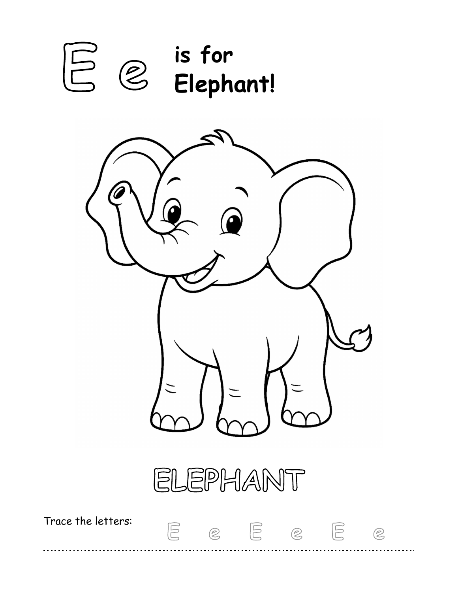
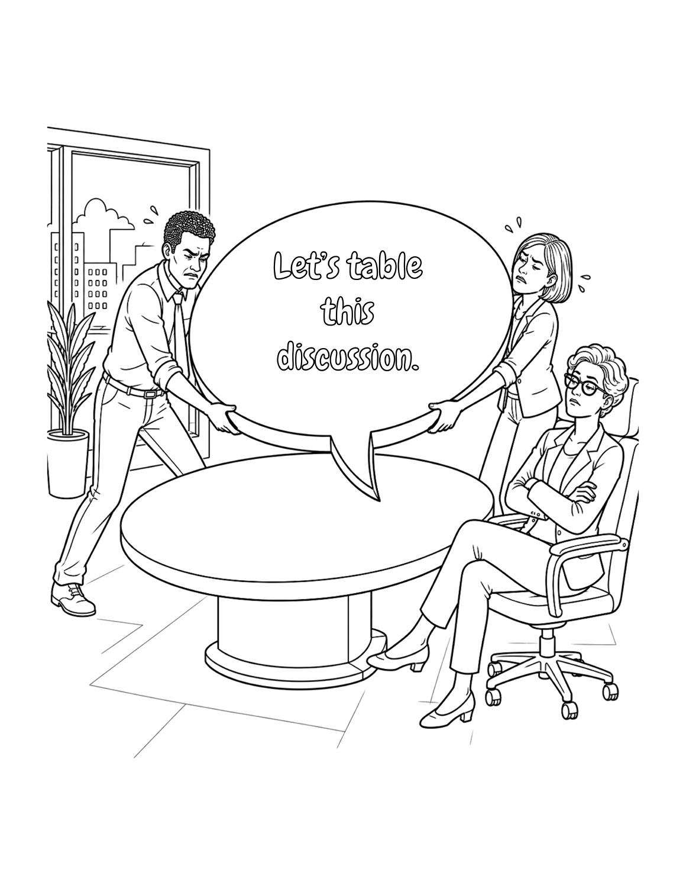
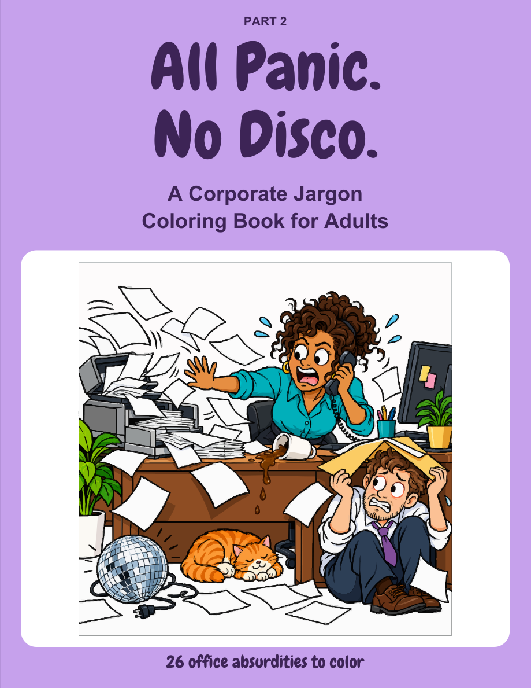
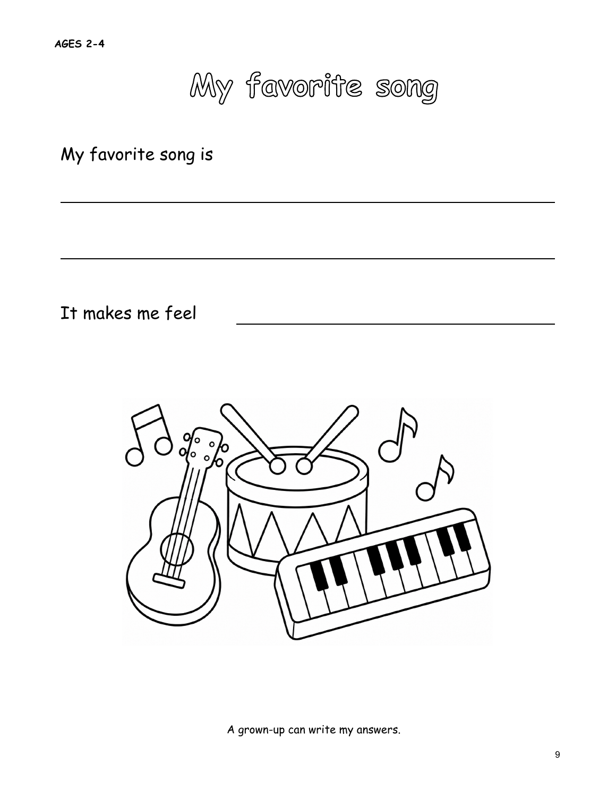
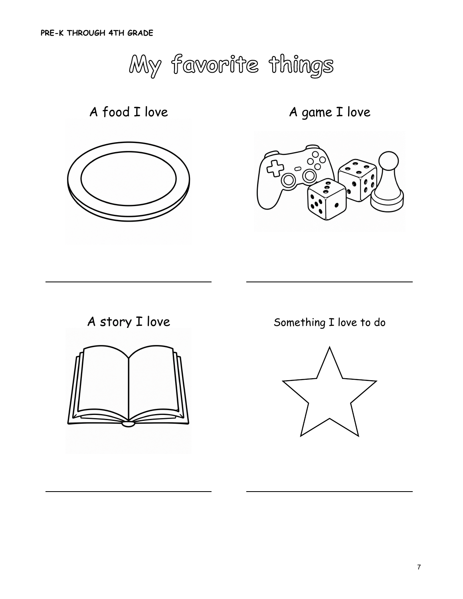
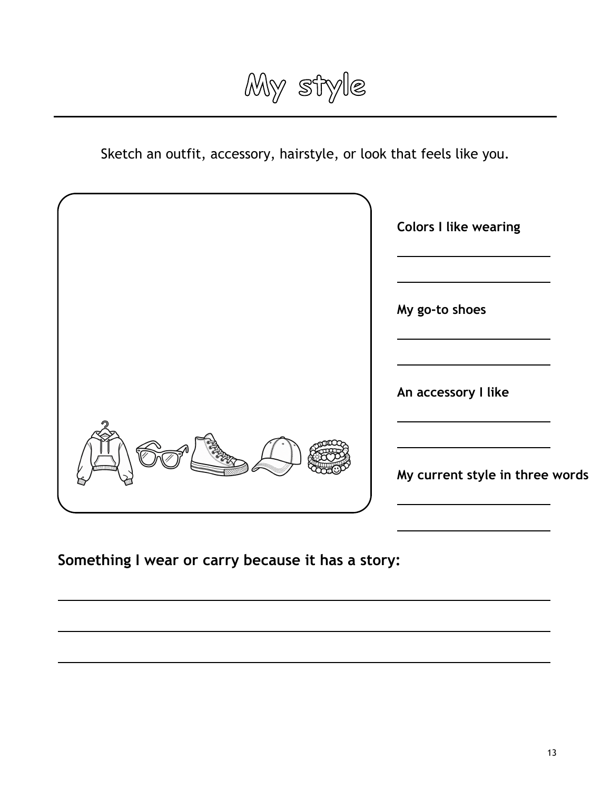
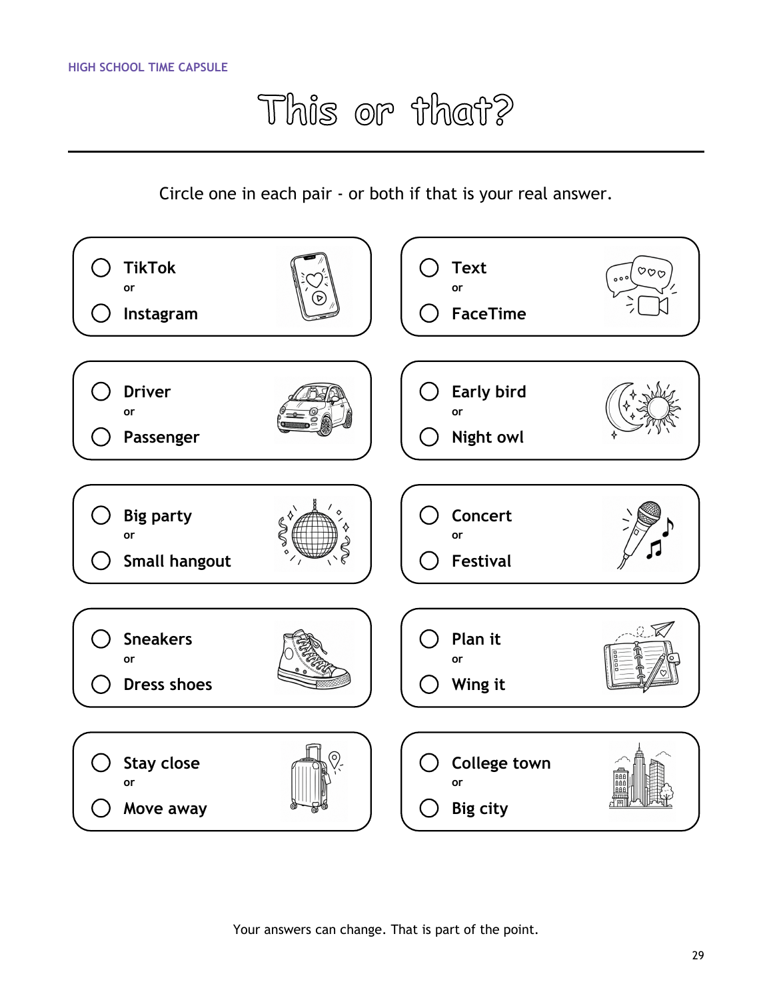
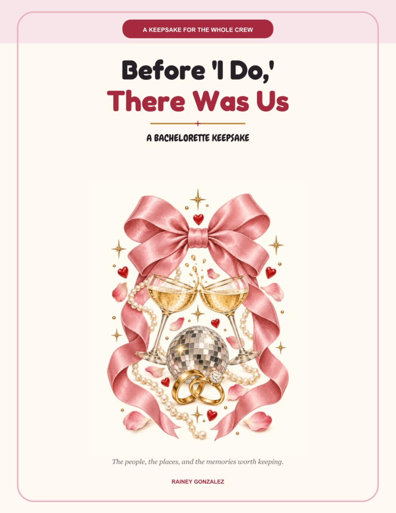
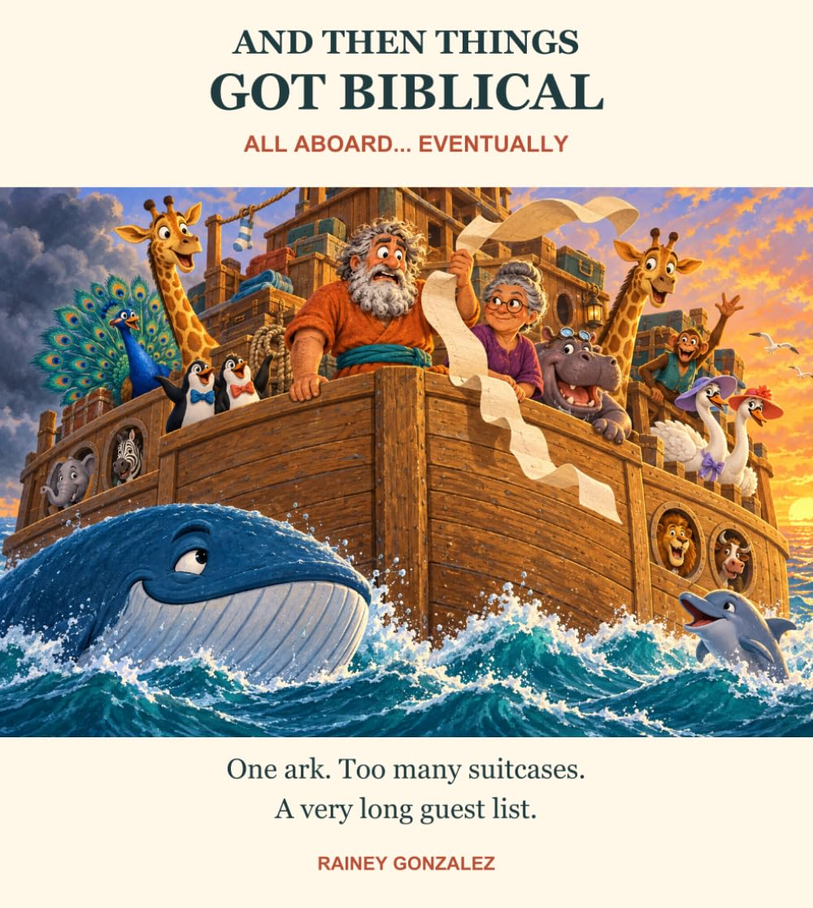
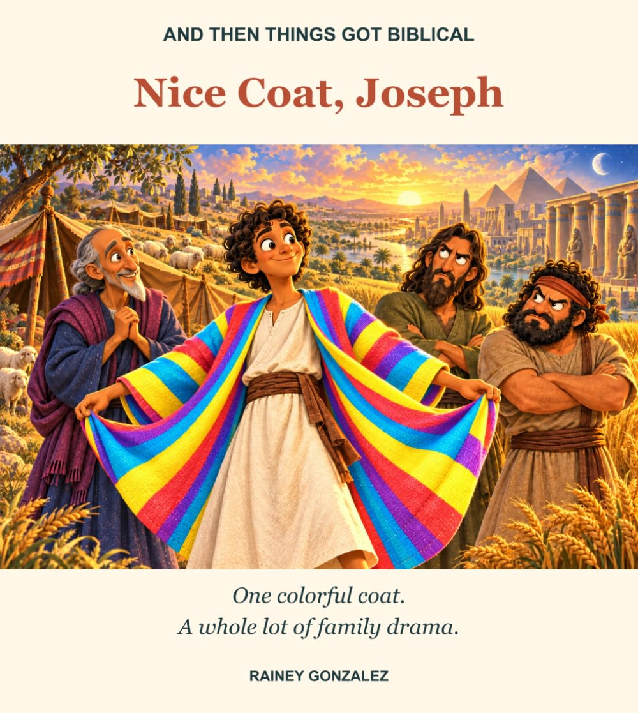

Ages 2–5 · alphabet activity
Animal Friends from A to Z
Friendly animals to color and uppercase and lowercase letters to trace, one letter at a time.
Explore Animal Friends and see a sample page →See the paperback on Amazon ↗Explore paperback coloring books, guided family keepsakes, a bachelorette memory book, and playful illustrated Bible-story retellings.
Explore the booksBrowse four real, personal-use pages from the animal alphabet, funny office coloring, and bridal-party books. No signup is needed. See all four free sample pages and their matching books →
An animal alphabet coloring book for ages 2–5, plus funny office coloring books for adults. Save one free Narwhal coloring and letter-tracing page → Save one free page from Let’s Jump Right In → Save one free page from All Panic. No Disco. →

Friendly animals to color and uppercase and lowercase letters to trace, one letter at a time.
Explore Animal Friends and see a sample page →See the paperback on Amazon ↗
A corporate-jargon coloring book that turns familiar workplace phrases into scenes to color.
See book details and a sample page →
Another dose of workplace absurdity in a corporate-jargon coloring book for adults.
See book details →Age-specific time capsules for families, plus a guided place for bridal-party memories. Compare the four Me, Right Now! editions and their real sample pages → Save a free Bride Trivia page for the party →

Simple prompts and coloring activities to record a little one’s favorites and everyday moments.
See book details and a sample page →
A guided snapshot of a child’s ideas, favorites, and life right now.
See book details and a sample page →
Prompts for the opinions, interests, and memories of the middle-school years.
See book details and a sample page →
A guided keepsake for capturing the high-school years.
See book details and a sample page →
A bachelorette keepsake for stories, inside jokes, photos, letters, and the people celebrating together.
Explore the keepsake →Playful retellings inspired by Genesis. The humorous dialogue is invented, not presented as Bible quotation.

Noah, a crowded ark, and a family with a very long guest list.
Explore the Noah story →
A colorful coat and a family reaction in a playful illustrated retelling.
Explore Joseph and see a sample page →See the paperback on Amazon ↗Follow the dedicated book Page or browse book-specific Pinterest boards for covers and selected sample pages. The Pinterest boards are hosted on the shared Pawpulr LLC business account.
Rainey Gonzalez creates coloring books, guided keepsakes, and illustrated stories for different moments in family and adult life. Each book above links to its individual paperback listing.